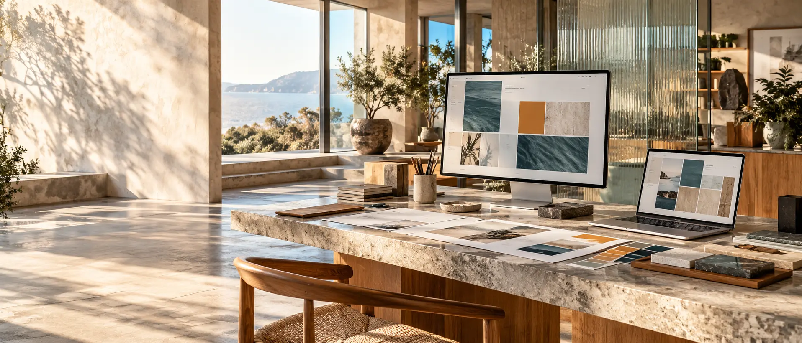

Built to be explored.
WEB DEVELOPMENT · WEBSITE DESIGN · SEO / SDB STUDIO
FROM IDEASTO INTERACTIVEWEBSITES.
A website should look memorable, feel effortless and be built to be understood by search engines. I'm Dineshbabu—a freelance web developer and SEO practitioner creating expressive websites, practical features and thoughtful search foundations.

Stand out.
Make sense.
Make sense.
Web design Development SEO foundations Website care
EXPLORE SERVICES ↗
Websites built for real business needs.
01 / THE CREATIVE APPROACHDigital experiences
Digital experiences
made to connect.
Three sides of a useful digital presence: how it looks, how it feels and how clearly people can discover it. Concept imagery, not claimed client projects.
REAL INTERACTIONS / SELF-DIRECTED DEMOSDon't just look.
Don't just look.
Try the work.
Explore three working HTML, CSS and JavaScript demos. These are independent practice concepts—not commissioned client projects.
THE INTERACTIVE STUDIO / 01Beyond the ordinary.
Beyond the ordinary.
Built to move.
Every brand has a different energy. Explore three visual directions in this live concept—where motion, clarity and search-friendly structure work together.
This is an interactive style study created for the portfolio, not a claim of completed client work.
sdb.studio / live-preview
01 / THE BRAND
MAKE IT
MATTER.
One clear idea. An unforgettable digital presence.
EXPLORE THE IDEABRAND
ENERGY
ENERGY
02 / WHAT I DOFrom first launch
From first launch
to the next update.
Website design and development are the focus. Maintenance and technical support make the work more complete.
Static Website Development
Fast, expressive websites built with clean HTML, CSS, and JavaScript.Dynamic Website Development
Interactive functionality shaped around real workflows and user needs.Full-Stack Web Development
Frontend experiences connected to purposeful server-side systems.WordPress Website Development
Flexible content-managed websites you can keep up to date.Wix Website Development
Thoughtful Wix sites with clear structure and easy content control.Website Redesign & Maintenance
Improve the clarity, usability, and reliability of an existing site.03 / THE CREATIVE TOOLKITThe right tools.
The right tools.
The right feeling.
Technology is here to support the experience. These are the platforms, languages, and workflows I use or work around.
HTML5
CSS3
JavaScript
React
Node.js
WordPress
Wix
MongoDB
GitHub
Git
Selected capabilitiesA little depth.
A little depth.
A lot of purpose.
This animated deck previews the different sides of my work—design, development, CMS platforms, and website operations. The visuals are conceptual, not client project screenshots.
Explore portfolio05 / SEARCH VISIBILITYDesigned to impress.
Designed to impress.
Built to be found.
Alongside building websites, I work on technical, on-page and local SEO foundations that help people and search engines understand what a site offers.
Be clear.
Be discoverable.Technical · On-page · Local
Be discoverable.Technical · On-page · Local
Technical SEOCrawlability, indexation, sitemaps, canonicals and site health.On-page SEOSearch intent, page titles, headings, internal links and content.Local SEORelevant local pages and consistent business information.MeasurementSearch Console checks, reporting and practical next steps.
Explore SEO services
Based in Chennai · Available worldwideBased in one city.
Based in one city.
Creating worldwide.
I'm based in Chennai, India, and open to freelance collaborations with businesses, founders and professionals anywhere in the world.
Every website still needs to speak to its real audience. I focus on mobile-first design, accessible experiences, clear service content and search foundations shaped for each market—without invented addresses or ranking guarantees.
MADE
FOR
YOU.01 CHENNAI02 INDIA03 WORLDWIDE
FOR
YOU.01 CHENNAI02 INDIA03 WORLDWIDE
A more expressive webEvery detail
Every detail
in motion.
Movement with purpose. Design that stays memorable.
THE APPROACHA clear way
A clear way
from idea to launch.
Discover
We discuss the goal, audience, content, scope, and practical constraints.
Define
I propose a structure, platform, and development approach that fit the project.
Build
Layouts, responsive behavior, functionality, and checks take shape in focused stages.
Support
Launch coordination and maintenance can continue under an agreed scope.
LET'S BUILD SOMETHING USEFULYour next website
Your next website
starts here.
Not sure what you need yet? Explore a starting direction in three simple steps. No account, payment or personal details required.
What do you have in mind?
Pick the closest match. We can work out the details together.
What budget feels comfortable?
This helps frame the conversation. A ₹500 enquiry does not mean a complete website can be built for ₹500; quotes depend on the agreed scope.
When should it come to life?
No fixed deadline? That's perfectly fine—this is an initial conversation.
Let's make it happen.
Your selections are a useful starting point, not a final quote.
Website design and development
Continue to enquiry BUDGET RANGETo be discussedIDEAL TIMINGFlexible
The enquiry form opens with your choices preselected. Nothing is submitted automatically.

DINESH
BABU
BABU
07 / BEHIND THE STUDIOOne person.
One person.
Many useful
perspectives.
I'm Dineshbabu, founder of SDB Web Studio. I create frontend experiences, dynamic interfaces, WordPress and Wix websites, and practical SEO improvements.
The goal is simple: thoughtful design, maintainable code, clear content and a reliable website that supports what you do.
More about meYOUR NEXT PROJECTLET’S BUILD
Start a project